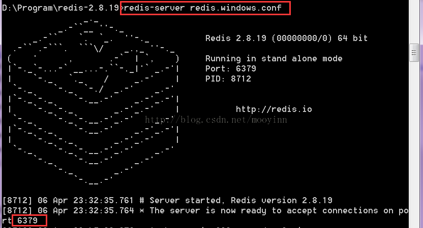

What is Redis
Redis是一个开源的使用ANSI C语言编写、支持网络、可基于内存亦可持久化的日志型、Key-Value数据库，并提供多种语言的API。
redis是一个key-value存储系统。和Memcached类似，它支持存储的value类型相对更多，包括string(字符串)、list(链表)、set(集合)、zset(sorted set --有序集合)和hash（哈希类型）。这些数据类型都支持push/pop、add/remove及取交集并集和差集及更丰富的操作，而且这些操作都是原子性的。在此基础上，redis支持各种不同方式的排序。与memcached一样，为了保证效率，数据都是缓存在内存中。区别的是redis会周期性的把更新的数据写入磁盘或者把修改操作写入追加的记录文件，并且在此基础上实现了master-slave(主从)同步。
Redis 是一个高性能的key-value数据库。 redis的出现，很大程度补偿了memcached这类key/value存储的不足，在部 分场合可以对关系数据库起到很好的补充作用。它提供了Java，C/C++，C#，PHP，JavaScript，Perl，Object-C，Python，Ruby，Erlang等客户端，使用很方便。
Redis支持主从同步。数据可以从主服务器向任意数量的从服务器上同步，从服务器可以是关联其他从服务器的主服务器。这使得Redis可执行单层树复制。存盘可以有意无意的对数据进行写操作。由于完全实现了发布/订阅机制，使得从数据库在任何地方同步树时，可订阅一个频道并接收主服务器完整的消息发布记录。同步对读取操作的可扩展性和数据冗余很有帮助。
Download Redis
Redis的官网是http://redis.io 直接来这里下载linux/unix版本的redis即可
Redis官方不提供windows版本，所以如果你想在windows下耍耍可以来这里下载第三方开发者提供的redis的windows版的：https://github.com/MSOpenTech/redis/releases
下载解压后（这里说的是windows的安装包，linux版本的请自动在脑子里去掉.exe即可）主要有以下几个文件：
redis-benchmark.exe：性能测试，用以模拟同时由N个客户端发送M个 SETs/GETs 查询 (类似于 Apache 的ab 工具).
redis-check-aof.exe：更新日志检查
redis-check-dump.exe：本地数据库检查
redis-cli.exe：客户端
redis-server.exe：服务端
另外windows版本解压后会有个redis.windows.conf，linux下为redis.conf
Install Redis
windows下安装过程即解压过程，解压到某个目录下，比如解压到：D:\Program\redis-2.8.19
linux下按照官方文档指导，几分钟就搞定了：http://redis.io/download
Configu Reredis
windows下需要稍微进行配置，打开redis.windows.conf文件，找到这一行：
# maxheap
在下面添加：
maxheap 1024000000
即可
linux不需要进行配置
Startup Redis
在安装目录下运行redis-server即可，为了方便可以把redis目录配置到环境变量里面
当然在windows下运行还需要加配置文件参数：redis-server redis.windows.conf
成功运行后，会在控制台显示如下界面：
如红色标记所示，启动命令和默认的监听端口
Test Redis
运行redis-cli命令，即可通过set，get之类的命令来进行测试了

- By enilu
- 04/07/2015
- 0
- redis,分布式缓存,大数据